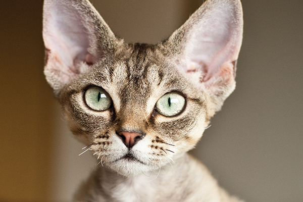
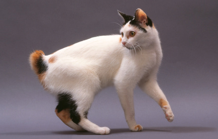
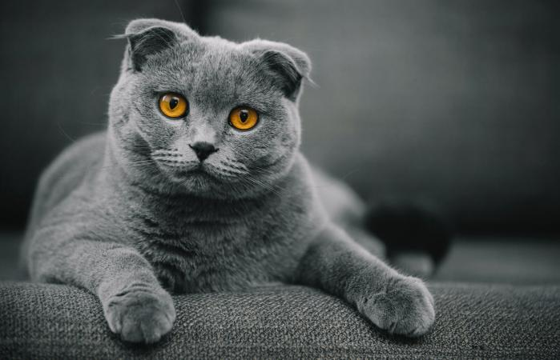
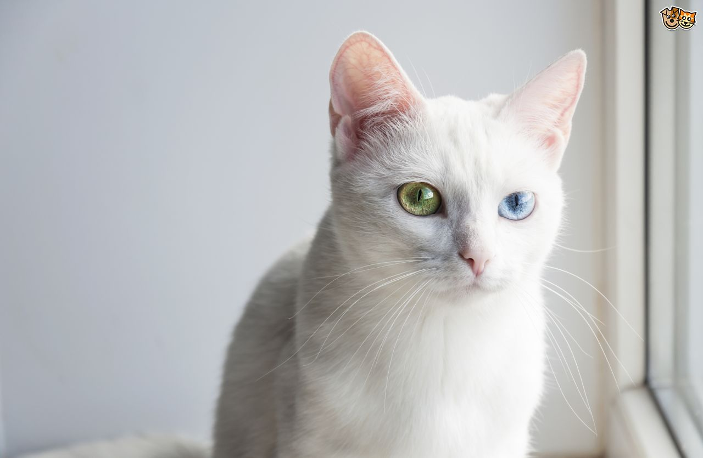
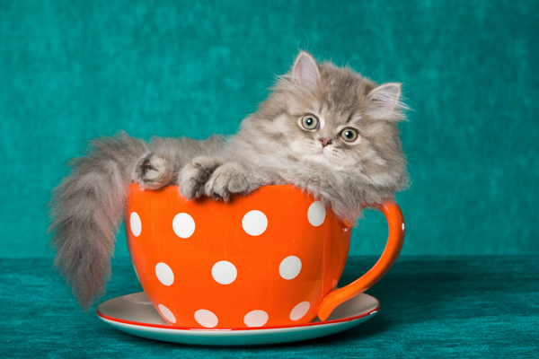

Munchkin cat are known for their shorter legs but standard build. Until the mid-nineties that it was formally recognized as a breed. This breed has long been controversial due to the morality of continuing to breed the genetic mutation causing the long bone deformity.

One of a few cat breeds with big ears, Devon Rex cats, along with the Cornish Rex cats they resemble, also have short, curly, soft hair. This breed was discovered in the 1950’s. These funny looking cats have huge personalities and love to socialize.
This Japanese cat breed is born with a short, puffy tail like the tail of a rabbit. Some Japanese bobtails even hop like bunnies when they running. Their back legs tend to be slightly longer than the front, giving them an especially athletic appearance.
Scottish Fold cats have bended ears that make them look almost earless. With round, full faces, and large, circular eyes, this can give Scottish Folds an owlish look. The breed developed from a cat named Susie, from Scotland, who had folded ears when she was discovered by a shepherd in 1961.
These cool looking cats come from Thailand, where their name means “White Gem.” These cats have been coveted for almost a thousand years, with creamy white coats and bright eyes of green, blue or gold—or odd (two different colors).
Technically, the Teacup Persian isn’t a strange cat breed of its own—it’s a variety of Persian cat that’s been bred to be extremely small. Some are so tiny they can fit in the palm of your hand.
